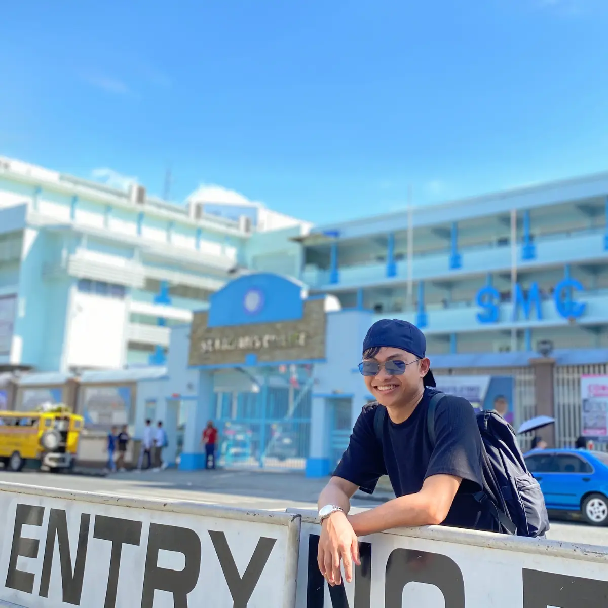
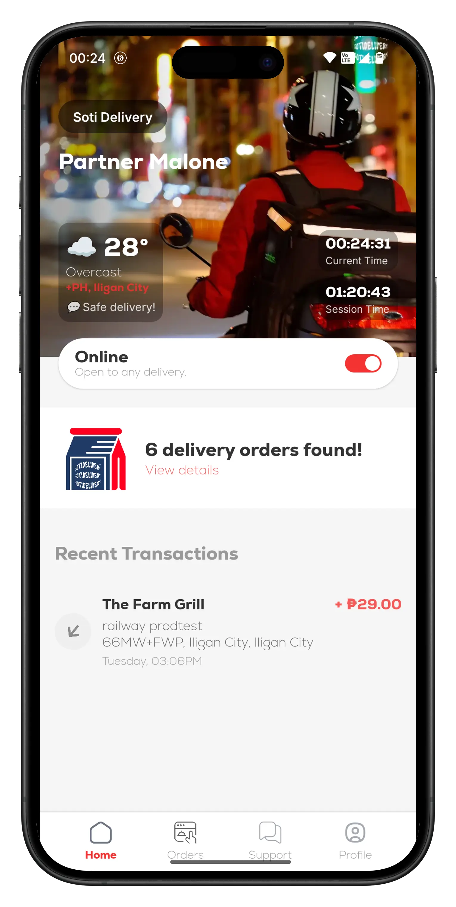
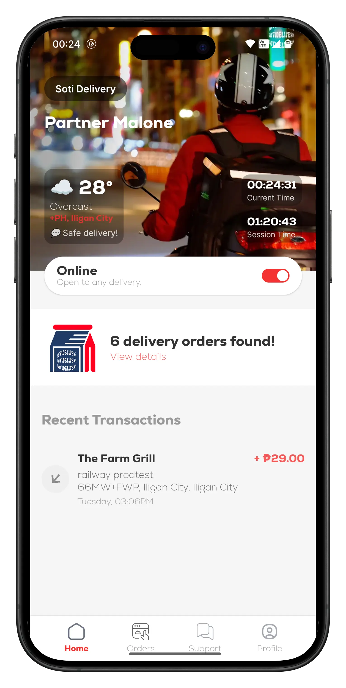
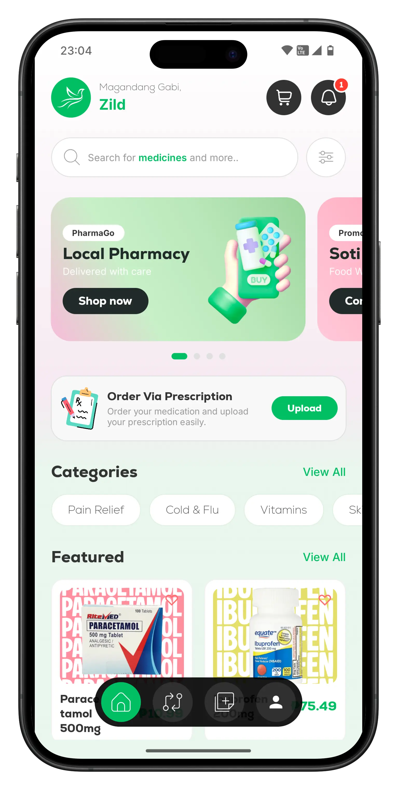

Hey there, fellow wanderer of the internet! 👋
Welcome to my little corner of the digital world! I'm Ryan, or Mohammad Ryan Muto Walloh if we're being formal (but let's not, formality is overrated haha!). I'm a Son, friend, fur parent, and your friendly neighborhood web and app developer from the beautiful, humble lake city of Lanao Del Sur. And above all, A Muslim.
If you're wondering what you've stumbled upon, think of this blog as a creative playground where code meets storytelling, where tech talks blend with life lessons, and where every post is brewed with a mix of caffeine, curiosity, and a lot of trial and error.
So, Who Is This Guy Anyway?
Let me paint you a picture (pun absolutely intended because I'm also a photographer and visual storyteller, so expect lots of those). I'm someone who sees the world through two lenses: the camera lens that captures fleeting moments, and the developer's lens that builds lasting solutions.
Capturing moments, building solutions - through two different lenses
As a photographer, I'm obsessed with immortalizing moments. You know that bittersweet feeling when you look at old photographs of loved ones who are no longer with us? That's the magic and the reminder photography gives us. Dunya (this world) is temporary, but the stories we capture? Those echo forever. My style isn't just about snapping pretty pictures; it's about capturing souls, emotions, and narratives frozen in time. Every frame tells a story, and every story deserves to be told beautifully.
As a developer, I'm driven by purpose. Not just "let's build an app because it's cool" purpose, but "let's solve real problems for real people" purpose. I believe technology should serve communities, not just Silicon Valley unicorns. And that brings me to the project that's been consuming my brain cells (in the best way possible)...
The Food Delivery Dream: Feeding Marawi, One Line of Code at a Time
Picture this: You're in a city experiencing a food industry boom. Restaurants, cafes, bakeries, local eateries popping up left and right. It's a foodie's paradise! But here's the plot twist: we don't have a comprehensive food delivery service.
Yep, you heard that right. While the rest of the world is tapping away on FoodPanda and Uber Eats, Marawi City is still relying on social media posts and SMS orders. Some amazing restaurants are hidden gems, literally hidden because they're tucked away from the highway or in less accessible spots. Great food, poor visibility. Tragic, right?
That's when the lightbulb moment hit me during my freshman year: "What if I build the first-ever full-fledged food delivery platform for my city?"
 

Building the first comprehensive food delivery platform for Marawi City
Fast forward to now. I'm a graduating student, and that crazy freshman dream? It's becoming reality. We've got an MVP (Minimum Viable Product for the non-techies) with both web and mobile platforms. Is it perfect? Haha, far from it! But as we say in IT: one bit at a time.
More Than Just Food: Building With Purpose
Here's where it gets exciting. This isn't just about convenience; it's about impact:
- For food business owners: A digital platform to showcase their delicious creations, reach more customers, and compete fairly regardless of location.
- For job seekers: New opportunities, from company staff positions to delivery riders.
- For tricycle drivers: Marawi has tons of tricycles (motorcycles with sidecars) operating as transportation. What if we invite some drivers to join the platform? They could potentially remove sidecars, create more road space, earn income, and maybe, just maybe, help ease our traffic situation a tiny bit? (Okay, I know traffic is complex, but hey, every journey starts with a single step, right? 😄)
But wait, there's more! I'm working on integrating pharmacies into the system too. I actually built a multi-pharmacy delivery platform for my capstone project (yes, we passed that thesis beast!). Sounds simple? It's not. Try juggling prescription verification, valid ID checks for discounts, and UI/UX challenges that make your brain hurt. But damn, it was worth it!
From capstone to reality: Building platforms that serve real community needs
Why Am I Doing This?
"The most beloved people to Allah are those who are most beneficial to the people."
I want to build something that genuinely helps my community, something that scales and reaches more communities, Inn Shaa Allah (God willing). Technology is powerful, but it's meaningless if it doesn't serve people.
What to Expect on This Blog
So what's in store for you here? Think of it as a behind-the-scenes pass to:
- Photography adventures and the stories behind the shots
- Development diaries from the trenches of building real-world apps
- Life lessons through the lens of faith, friendship, and travels
- The journey of building a purpose-driven platform for the lake city (with all the wins, fails, and "what was I thinking?" moments)
Whether you're a fellow developer, a photography enthusiast, someone interested in social entrepreneurship, or just someone who enjoys reading about people trying to make a dent in the universe, you're in the right place.
Let's Build This Story Together
I'm inviting you to follow along as I document this wild ride of building something meaningful from scratch. There will be bugs (so many bugs), breakthroughs, setbacks, and hopefully, a platform that makes a real difference.
So subscribe to stay updated, or just bookmark this page and come back whenever you need a dose of creative chaos mixed with purposeful tech talk.
SubscribeLet's turn ideas into impact, one blog post at a time.
Bismillah (In the name of Allah)
P.S. Got questions? Ideas? Or just want to say hi? You can send me a direct message using the newsletter. I read every single one, and I promise I'm much friendlier than my code's error messages. 😄